17世纪，日本，太平盛世。
武将井伊家迎来了一个不速之客。
他叫津云半四郎，是一个穷苦潦倒的浪人。
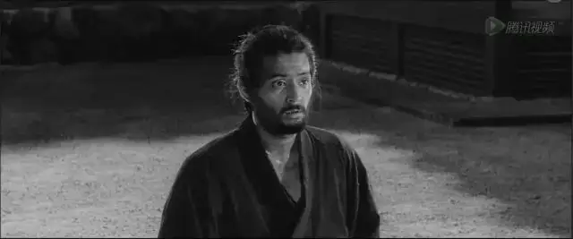
津云半四郎登门井伊家是为了切腹自杀。
作为一名武士，他认为相比于贫穷的苟活，宁愿切腹自尽。
日本人认为，腹部乃是人灵魂、情感寄托之处。
事实上，由于腹部乃是神经密集之处，故切腹时会产生极大苦痛，让人感到生不如死。
因此能勇敢、凛冽地完成切腹的仪式，是最能够凸显一位武士的勇气，也是坚持贯彻武士道之最有尊严死亡方式。
而能够在名门望族家里完成切腹仪式，不仅是他作为武士最后的荣耀，更是彰显了日本武士道的精神。
这本是一件非常勇敢悲壮的举动，但津云半四郎的请求却遭到了井伊家的不屑和质疑。
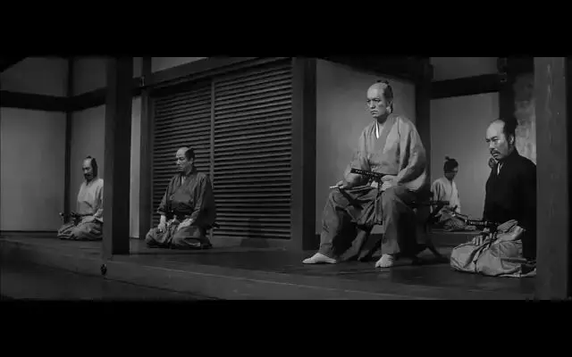
因为津云半四郎的说辞和井伊家此前遇到的一个落魄武士如出一辙。
那个武士叫千千岩求女，他也是说自己不甘心穷困潦倒，宁愿切腹自尽来了结自己的一生。
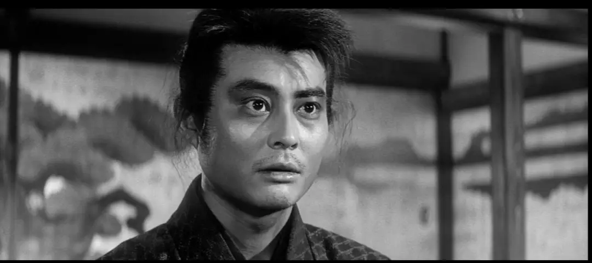
但井伊家后来发现他虽说要来切腹，但实则是打着武士道精神的名义来求财的。
因为他们发现千千岩求女自己的佩剑竟然是一把竹剑。
竹剑怎么可能完成完成切腹？？
此人只不过是想通过切腹让名门望族对他产生同情，要么因为他的勇气给他一份工作，要么给点小钱把他打发了。
这简直是对武士道精神的侮辱！
所以井伊家不动声色，让千千岩求女沐浴更衣，为他准备了盛大的切腹仪式，硬逼着这个跳梁小丑来完成他根本不可能完成的事情。
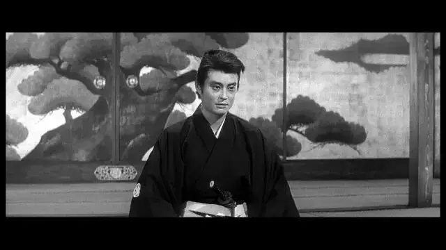
千千岩求女眼看着形势不对，请求先回家几天处理点事情，然后再过来完成切腹仪式。
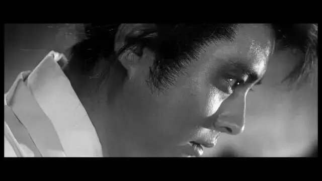
井伊家完全看穿了他的把戏，并不给他任何余地，威逼他完成自己“一心所求”的切腹仪式。
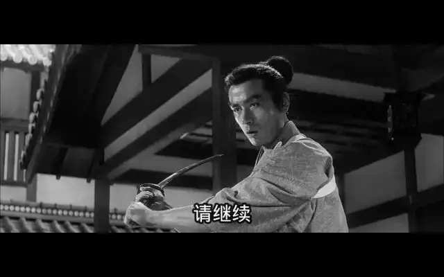
于是，千千岩求女被逼无奈，只能用自己的竹剑完成切腹。
因为竹剑很难刺入腹部，千千岩求女要用尽全身力气，甚至将整个身子压在剑上才能勉强将剑刺入身体。
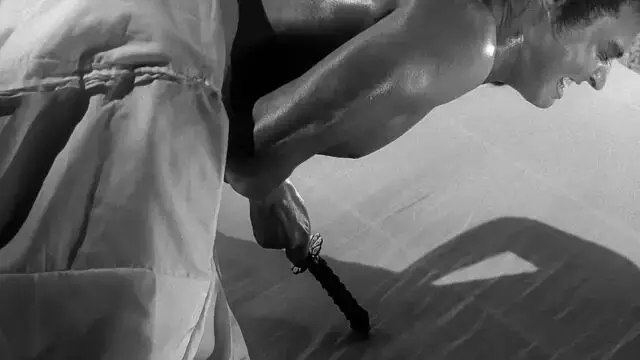
切腹本来就是对身体疼痛的极度挑战，而竹剑更是无限拉长了这种锥心的痛苦。
千千岩求女最终无法忍受痛苦，选择咬舌自尽。
在井伊家眼里，千千岩求女是活该，他不仅是个骗子，还是个软弱无能的家伙，根本就不配成为武士道精神的追随者。
如今，津云半四郎的套路和千千岩求女很像。
难道，武士道精神竟然都沦落成一门生意？
所以，井伊家对津云半四郎非常不屑，他质疑津云半四郎的动机和勇气。
面对井伊家的质疑，津云半四郎却表现的异常冷静，他的眼里看上去没有一丝犹豫和害怕，反而充满了视死如归的勇气。
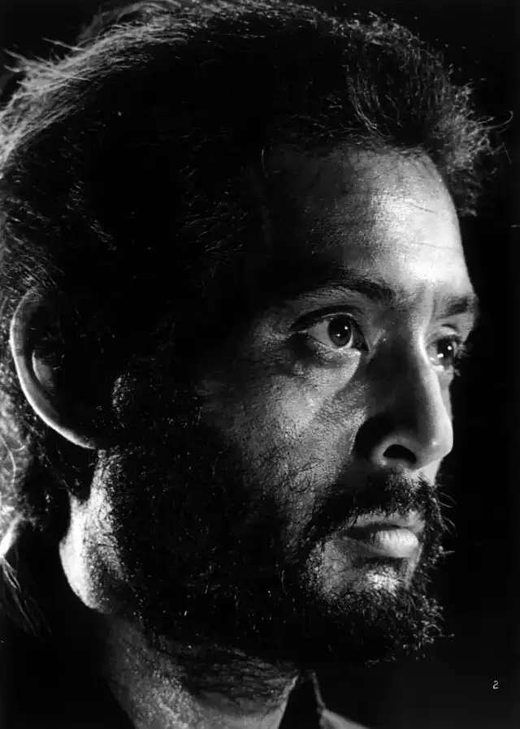
津云半四郎告诉井伊家，他和千千岩求女不同，他来到这里，一定要完成切腹仪式。
井伊家倒要看看这个津云半四郎会耍什么花样。
于是井伊家再一次为津云半四郎准备了盛大的切腹仪式，有很多一流的武士来围观这场勇气的表演。
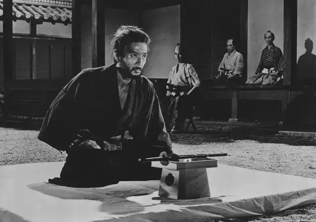
在切腹仪式中，因为切腹者会非常痛苦，所以会找一个自己信任的朋友，在自己极度痛苦的时候将自己斩首。
这种来担当补刀行为的人称之为介错，担任介错的人是非常的荣幸，必须要有高超的剑术。
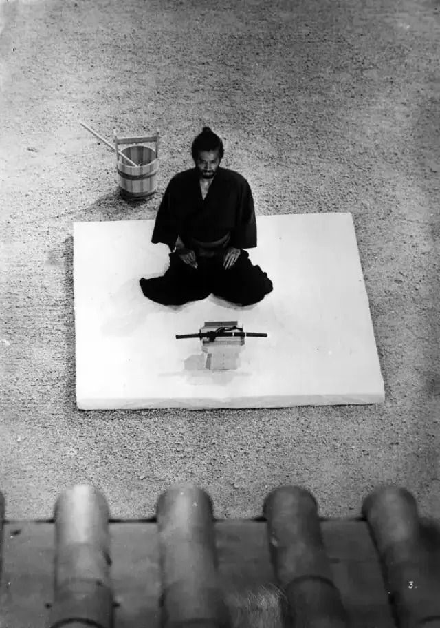
井伊家请津云半四郎点名一个人来担任介错，所以津云半四郎便点了一个人。
那个人是井伊家的家臣，当天恰好身体不适在家休息。
所以，井伊家请手下去找那名武士，切腹仪式也不得不陷入到等待中。
津云半四郎便向井伊家提出请求，既然大家等着这么无聊，不如让他讲一下自己的故事。
他告诉在场的所有武士，“这虽是我的故事，但我的现在就是你们的将来。”
众人听罢，依旧一副不屑的表情。
津云半四郎开始讲起了自己悲惨的一生，他作为一个剑术高超的武士，曾经也非常风光，后来家主中落，他变成了一个落魄的浪人。
所幸，他有个漂亮的女儿，还有一个挚友。
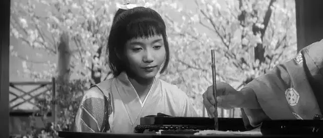
他靠做雨伞为生，日子虽然艰辛，但也过的去。
时间荏苒，转眼女儿长成了亭亭玉立的大姑娘，并被一个望族看上，想要纳他女儿为妾。
这在所有人看来，都是一个屌丝逆袭的机会。
但津云半四郎却拒绝了名利，为女儿选择了爱情，将她嫁给了自己挚友的儿子，他俩从小青梅足马，早已互生情愫。
但是朋友家的儿子自知自己没钱没势，所以没敢去直接提亲，但是津云半四郎没有嫌弃他，竟主动将女儿托付给了他。
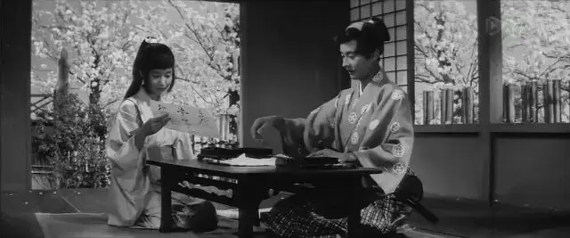
而那个人就是千千岩求女！
两人组建家庭后，生活过的很幸福，并且拥有了一个孩子。
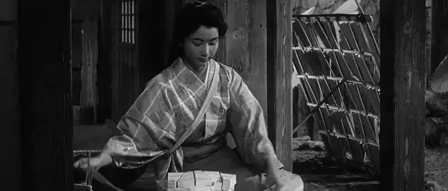
直到，津云半四郎的女儿操劳过度卧病在床。
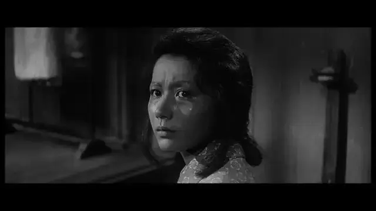
不久，他的孙子也病倒，连续几天高烧不退，他们生活非常拮据，甚至请不起医生来为孩子看病。
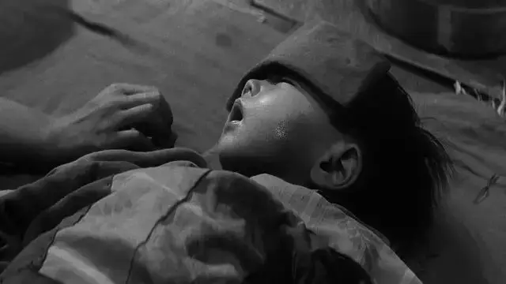
就在一家人一筹莫展的时候，千千岩求女告诉岳父和妻子，他认识一个朋友，也许可以借到钱。
于是，千千岩求女带着全家人的希望出门了。
可津云半四郎和女儿、孙子却迟迟没有等到这个希望，直等到千千岩求女冰冷的尸体，送来尸体的人就是津云半四郎要求的介错......
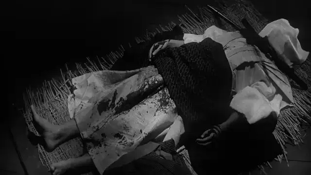
这部电影就是小林正树最出色的作品《切腹》，曾经获得戛纳电影节评审团特别奖，是一部可以和黑泽明叫板的电影。
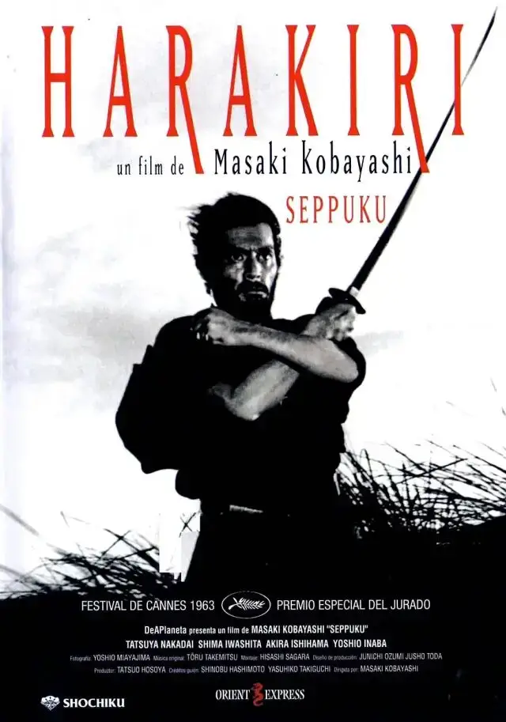
在过去几十年的时间里，这部作品的评价一路高升，目前在豆瓣的评分甚至超过了黑泽明的《七武士》和《罗生门》，成为了最能代表日本电影成就的作品之一。
电影的名字很吃亏，对于我们中国人来说，一看就觉得变态，会不由自主地想到抗日神剧中那些猥琐变态的日本人。
但事实上，《切腹》却是日本人自己对武士道精神和切腹行为的质疑之作。
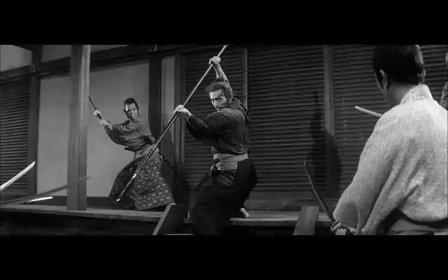
这部电影极具电影风格和仪式感，通过133分钟呈现了两场切腹，并通过不同人的眼睛和立场为我们还原了一场可怕的悲剧。
起初，我们像井伊家一样，会觉得千千岩求女是个跳梁小丑，虽罪不致死，但至少我们不会对他有过多的同情。
但是当我们通过津云半四郎了解了千千岩求女的困境时，我们便不由自主地陷入到沉默中。
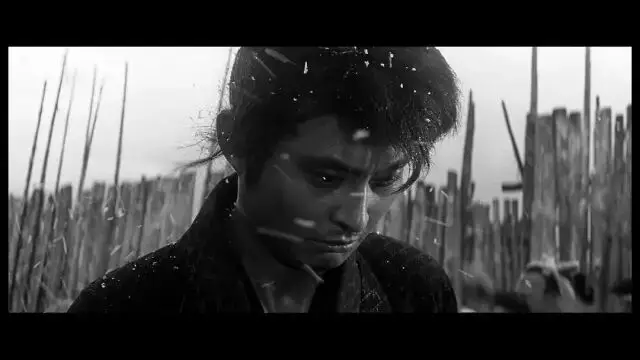
哪有随随便便的龌龊，穷苦人的凄凉处境又岂是别人可以体会的。
很多人都觉得一些底层人非常狡黠，爱贪小便宜，但如果你自己没有经历过那种生活的窘境，你便很难理解这种底层生态里的卑鄙。
因为，在艰难的生活里，尊严对于一些人来说是一件奢侈品。
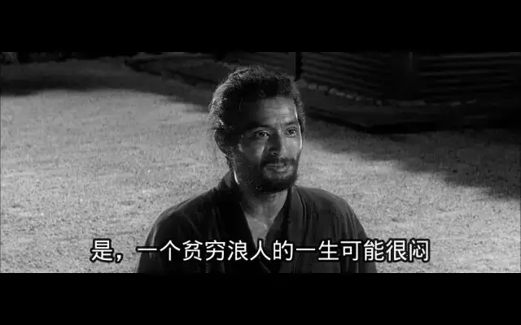
对于津云半四郎和千千岩求女来说，他们最大的尊严就是手上的武士剑和心中的武士道信仰。
当妻子和孩子性命攸关之时，千千岩求女为了家人放弃了这项尊严，他先是偷偷地将自己的剑换了钱，害怕别人发现所以才做了一把竹剑插在里面。
后来为了家人，更是赌命一搏，打着武士道的名义去井伊家求些小钱。
这些行为，对于千千岩求女来说，也是非常痛苦的。
因为佩剑和武士道信仰是刻在他骨子里自以为义的骄傲和自豪，但他现在为了生活却不得不放下这一切，这恐怕要比切腹更难。
津云半四郎是一个比千千岩求女对武士道更加忠诚的人，但是当他看到千千岩求女的尸体，尤其是当他看到千千岩求女的竹剑时，他惭愧地痛哭起来。
津云半四郎的女儿和孙子都要病故了，他还守着自己的佩剑，而自己的女婿却可以为了家人放弃这一切，甚至不惜沦为众人的笑柄。
比起千千岩求女，津云半四郎羞愧难当，他一直所信奉的武士道精神产生了动摇。
所以，才有了电影刚开始的场景，津云半四郎来到井伊家，视死如归！
他要告诉这些所谓的武士道精神的代表，千千岩求女才是真正的勇敢，所谓武士的自尊不过是个装饰品。
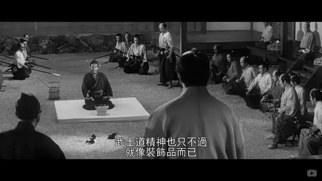
同时，津云半四郎也在向井伊家发出谴责，即使千千岩求女是欺骗行为，即使他不配做个武士，但罪不致死，为什么要把他逼死，为什么不给他解释的机会？？
“武士也是人，有血有肉，不能活在空气中…如果你没有体会过要担负养家糊口的压力，可能无法理解他在面对死亡的时候的犹豫。”
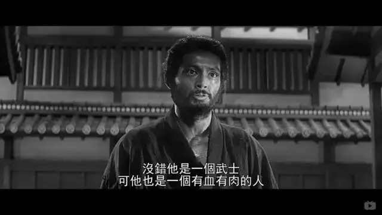
可当井伊家听完津云半四郎的控诉后，他们并没有感觉惭愧，而是下令要杀死津云半四郎以遮盖这背后的丑陋。
井伊家的表现彻底让津云半四郎看透了武士道的虚伪，津云半四郎最终选择用自己的长剑来划破那可怕的黑暗。
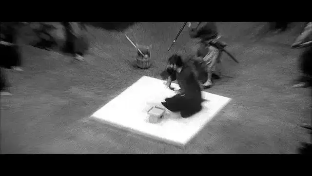
这是一部非常深刻的电影，一方面不留余地地揭露了穷苦人的悲惨命运和上流阶层的虚伪，并无情地告诉观众，人间的悲欢并不是互通的。
另一方面，从更深的角度来看，这部电影对人的自我为义提出了彻底的质疑和挑战。
这一点非常难，因为我们每个人都是靠着某种信念在前行，当这些信念真的帮助我们变得更好的时候，我们便会从中总结出一种适合自己的成功之道、快乐之道，并引以为傲。
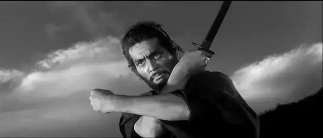
这是个体的自我为义，可以是某种习惯，也可以是某种美德。
这种自我为义不仅存在于个体，更广泛地存在各种群体、民族和国家。
比如富人阶层以财富为骄傲，知识分子以知识为骄傲。
日本曾以武士道为民族精神追求，中国人想到大一统和爱国主义就会满腔鸡血。
这些东西根深蒂固，成为某个人、某个群体、某个民族和国家的骄傲，并指引着大家一路向前。
但《切腹》却以这个绝妙的故事对这种自我为义提出了质疑。
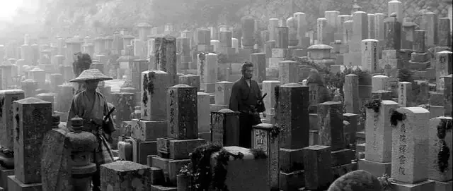
首先，自我为义会让人变得骄傲自大、冷漠无情，不论是井伊家还是津云半四郎，狂热的武士道信仰让他们产生了盲区。
他们狂热地信奉勇气的信条，所以，井伊家高高在上，再也看不到穷苦人的悲惨。
当女儿、孙子病重，津云半四郎觉得自己走投无路，却不知道自己死死握着的那把剑其实是可以救自己的亲人的。
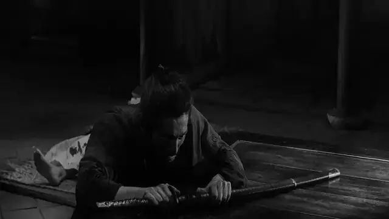
总之，狂热的自我为义会膨胀自我，甚至膨胀到整个世界都只有自己的感受，自己的目标和信条，再也容不下别的意见和生命。
其次，这部作品揭露了自我为义的虚伪和脆弱。
从个人来说，当时打着勇气的名义逼死千千岩求女的人，后来他们被津云半四郎打败，却没有觉得羞辱而破腹自杀，反而装病躲了起来。
这是多么大的讽刺！
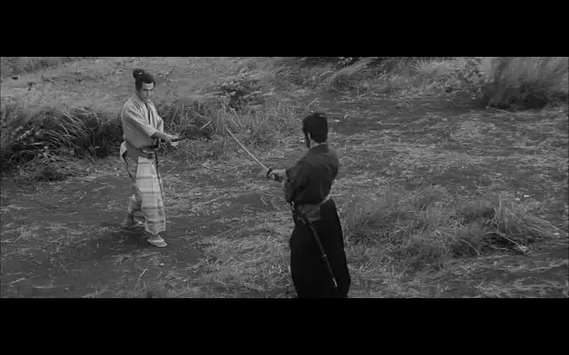
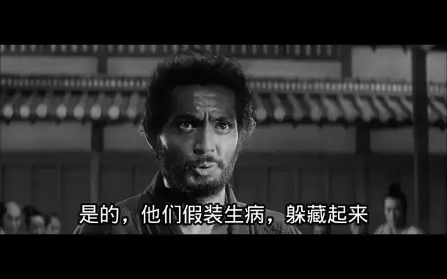
从群体来说，井伊家族所谓的威望竟然是靠虚假和掩盖真相获得的，当津云半四郎将他们打的落荒而逃的时候，他们竟然出动洋枪来对付津云半四郎。
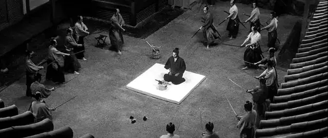
当津云半四郎死了以后，井伊家吩咐下人严守秘密，对外宣称津云半四郎是切腹自杀，而被津云半四郎杀死的家臣是自己“生病去世”的。
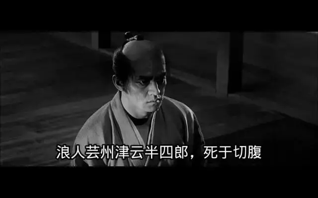
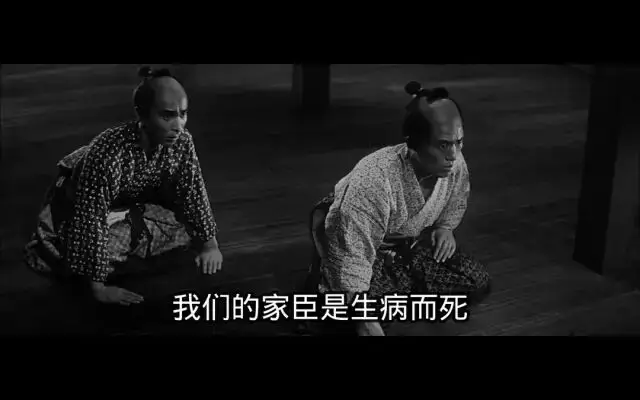
原来，群体的迷梦是用谎言和无辜人的鲜血堆积的。
这种自我为义根本就是没有出路的。
这部电影虽然压抑绝望，但却给出了另一条出路，那就是千千岩求女，他可以为了守护家人放弃手中的佩剑。
他离开了自我为义，走向了爱和舍己。
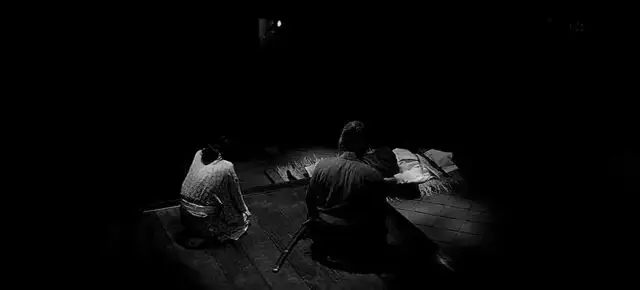
这不禁让我想到圣经中，一个人故意为难耶稣，问耶稣“夫子，律法上的诫命，哪一条是最大的呢？”。
这是一个非常刁钻的问题，在犹太人的律法中，都是很严苛、很高大上的诫命，每一条都是那么正义，那么急迫，哪一条是最重要的呢？如果答错了，随随便便就能给你扣个异端的帽子。
耶稣最后是这样回答的“你要尽心、尽性、尽意，爱主你的神，这是诫命中的第一，且是最大的。其次也相仿，就是要爱人如己。这两条诫命是律法和先知一切道理的总纲。”
耶稣告诉他，爱才是最大的律法。
如果你死守教条，只是出于自我为义，而不是出于爱，那你就算在外人看来很不错，那你一样是虚弱无力的。
在电影《沉默》中，幕府给了宣教士一个难题，如果你不叛教，那就当着你的面把你的门徒全部杀掉。
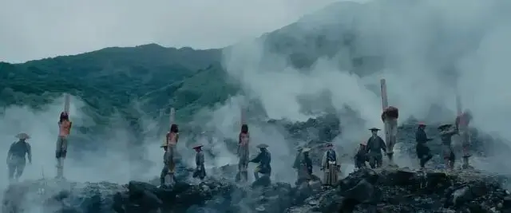
这是一个非常难的抉择，如果你选择叛教，那你的行为会摧毁门徒们的信仰，但是你坚持不叛教，一个又一个的生命会因为你坚定的信仰而逝去。
宗教优越感可以说是世界上最大的骄傲，以上帝之名的生活和选择总是充满了神圣，似乎我们非同寻常人。
但，值得我们骄傲的是我们信仰的对象呢，还是我们自己呢？，这一点，我们常常处于自欺中。
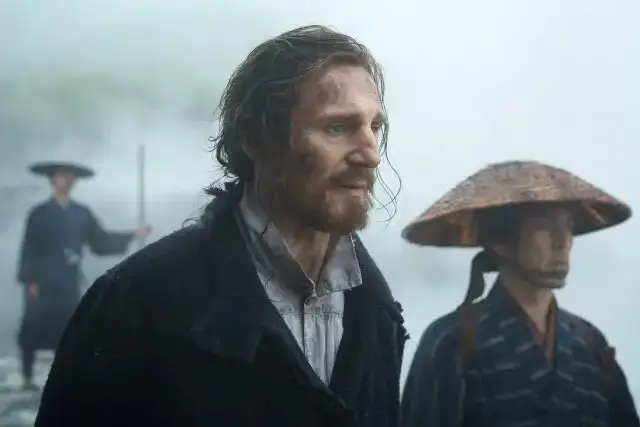
《沉默》中，那个宣教士最后为了救门徒，选择用自己的双脚践踏耶稣的圣像。
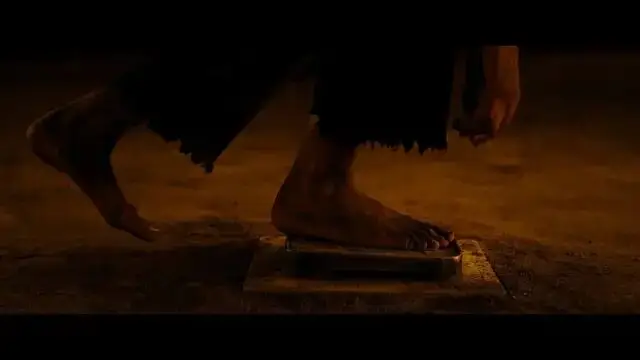
在那一刻，他痛哭流涕。
但却彻底地回到了一种真实中，才彻底意识到自己原来一无所夸，包括自己作为基督徒的身份。
但也正是那一刻起，他的信仰才变得更加真实，因为这个信仰里已经彻底将自我为义的虚伪击碎了。
所以，我们需要一种精神力量的支撑，但绝不是狂热的自我为义。
我们需要对人类的很多精神巴别塔有着清醒的认识，不要报以太高期望。
同时也需要有一双分辨的眼睛，如果一个群体在一个迷梦的感召下，变得嗜血、冷漠和虚伪，那我们需要保持清醒。
在那个时刻，为了爱和希望，努力做一个正常人，就是一个最勇敢的人。
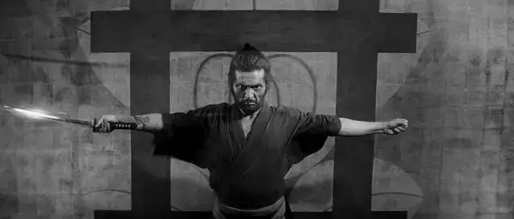
-END-
这里没有挑逗你眼目情欲的小鲜肉
也没有挑动你肉体情欲的段子
更没有膨胀你今生骄傲的鸡血
我们只在乎那些最质朴真诚的作品
在那里我们才能恢复真正的想象力
我们也坚信这才是我们真正需要的

ID:Six_hundred_hits
长按二维码，一键关注
【六百击】
电影评论
尽情分享朋友圈

微信二维码打赏通道